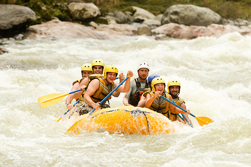
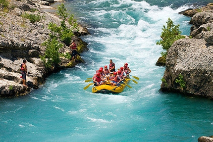
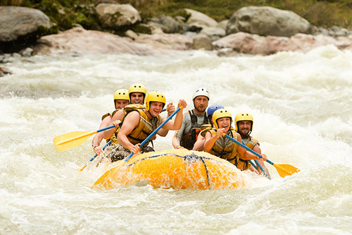
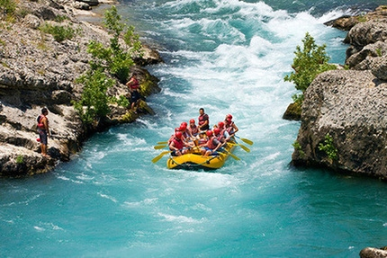

About Our Rafting Adventures
At Rapids Water Rafting Company, we ride the waves of adventure down the river with courage, joy, and unity. Our mission is to bring thrilling experience and smiles to you!
At Rapids Water Rafting Company, we ride the waves of adventure down the river with courage, joy, and unity. Our mission is to bring thrilling experience and smiles to you!
The Rapids Water Rafting Company was founded in 2017 to bring the thrill of white-water rafting to the remote and beautiful shores of Lake Turkana. Located where the Turkwel River 'drops' into the lake, our company was established by a group of local youth and eco-tourism enthusiasts who saw the untapped potential of adventure tourism in Turkana County. Inspired by the region's rich cultural heritage, breathtaking landscapes, and the untamed flow of the Turkwel River, we set out to create a unique experience that blends adrenaline with authenticity. What started with a single inflatable raft and a handful of daring explorers has grown into a trusted name in sustainable adventure tourism in northern Kenya. Over the years, we have guided hundreds of visitors—local and international—through the rapids and calm stretches of the river, offering not just a ride, but a story: of resilience, community, and the wild beauty of Turkana. Today, Rapids of Eliye Adventures is proud to be a community-driven enterprise, employing and training local guides, supporting conservation efforts, and promoting Turkana as a destination for eco-conscious travelers.
 


